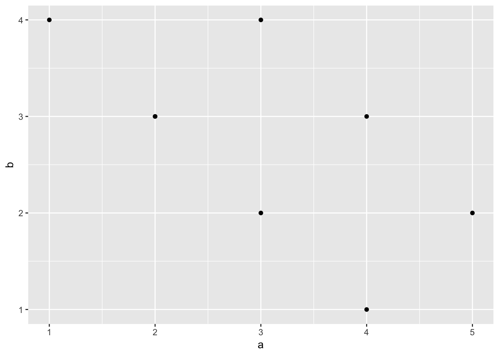

Course Notes
Notes (for mac)
- Insert R code in HTML:
Option+Command+i - Run inserted R code:
Control+Enter - Insert R code without running it:
{r eval=false}- Insert linked text:
[text](link)- Change color of text:
<span style="color:red">TEXT HERE</span>Class Notes
Notes from 1/4/19
# Class Type Examples
a <- 1
b <- "hello world"
d <- "3"
vector <- c(1,2,3,4,5,6,7,6,5,6,5,1000)
class(a)
class(b)
class(vector)
# Indexing
vector[8]
vector[8:10]
vector[c(10,10,10,10,10,10)]
vector[c(1,2,3,3,2,1)]
# Logical Indexing
vector[vector > 6]
vector[vector < 6]
vector[vector >= 6]
vector[vector <= 6]
vector[vector == 6]
vector[vector != 6]
# Replcament Usiong Indexing
vector[8] <- 3000
vector[1:2] <- c(10,15)
vector[1:2] <- c(10,15,17) # Error: cannot replace 2 positions with 3 items
vector[7] <- "j" # Turns entire vector into character class
# Class Types
a <- c("1","2","3")
class(a)
b <- a
class(b)
as.numeric(b)
# Splitting by period
a <- "gwaesr. dfgh fgiu out. yirde tsdgf."
a[1]
b <- strsplit(a,split="[.]")
class(b)\
# Lists
a <- "gwaesdfghfgiouigrdtsdgf."
a[1]
b <- strsplit(a,split="")
class(b)
b
b[[1]]
b[[1]][5]
example_list <- list(a=1, b=4, d=c(1,2,3,4))
example_list[[2]]
#Unlisting
b <- unlist(strsplit(a,split=""))
b[5]
# Matrices
a <- matrix(0, nrow = 5, ncol = 5)
View(a)
# Data Frames
first_names <- c("jeff", "matt", "steve")
ages <- c(100, 200, 150)
grades <- c(89, 56, 99)
everybody <- data.frame(first_names, ages, grades)
View(everybody)
everybody$first_names
everybody$ages[1] <- 12
everybody$grades[1]
# Levels
class(everybody$first_names) # Factor ClassClass Notes 2/15/19
a <- data.frame()
Names <- c("Peter","Paul","Mary")
Ages <- c(1000,1200,100)
Sex <- c("M","M","F")
my_df <- data.frame(Names,Ages,Sex)Add NA in order to add empty data cells.
a <- data.frame()
Names <- c("Peter","Paul","Mary",NA)
Ages <- c(1000,1200,100,50)
Sex <- c("M","M","F",NA)
my_df <- data.frame(Names,Ages,Sex)Prevent strings from being treated as factors.
a <- data.frame()
Names <- c("Peter","Paul","Mary",NA)
Ages <- c(1000,1200,100,50)
Sex <- c("M","M","F",NA)
my_df <- data.frame(Names,Ages,Sex)
my_df$Names <- as.character(my_df$Names)
my_df$Names## [1] "Peter" "Paul" "Mary" NA# Create dataframe
a <- c(1,2,3,2,3,4,5,4)
b <- c(4,3,4,3,2,1,2,3)
plot_df <- data.frame(a,b)
# basic scatterplot
library(ggplot2)
ggplot(plot_df, aes(x=a,y=b))+
geom_point()
a <- c(1,2,3,2,3,4,5,4)
b <- c(4,3,4,3,2,1,2,3)
plot_df <- data.frame(a,b)
# customize, add regression line
library(ggplot2)
ggplot(plot_df, aes(x=a,y=b))+
geom_point(size=2)+
geom_smooth(method=lm)+
coord_cartesian(xlim=c(0,7),ylim=c(0,10))+
xlab("x-axis label")+
ylab("y-axis label")+
ggtitle("I made a scatterplot")+
theme_classic(base_size=12)+
theme(plot.title = element_text(hjust = 0.5))
factor_one <- rep(as.factor(c("A","B","C")),2)
factor_two <- rep(as.factor(c("IIA","IIB")),3)
dv_means <- c(20,30,40,20,40,40)
dv_SEs <- c(4,3.4,4,3,2,4)
plot_df <- data.frame(factor_one,
factor_two,
dv_means,
dv_SEs)
library(ggplot2)
ggplot(plot_df, aes(x=factor_one,y=dv_means,
group=factor_two,
color=factor_two,
fill=factor_two))+
geom_bar(stat="identity", position="dodge")+
geom_errorbar(aes(ymin=dv_means-dv_SEs,
ymax=dv_means+dv_SEs),
position=position_dodge(width=0.9),
width=.2,
color="black")+
coord_cartesian(ylim=c(0,100))+
xlab("x-axis label")+
ylab("y-axis label")+
ggtitle("Bar graph 2 factors")+
theme_classic(base_size=12)+
theme(plot.title = element_text(hjust = 0.5))